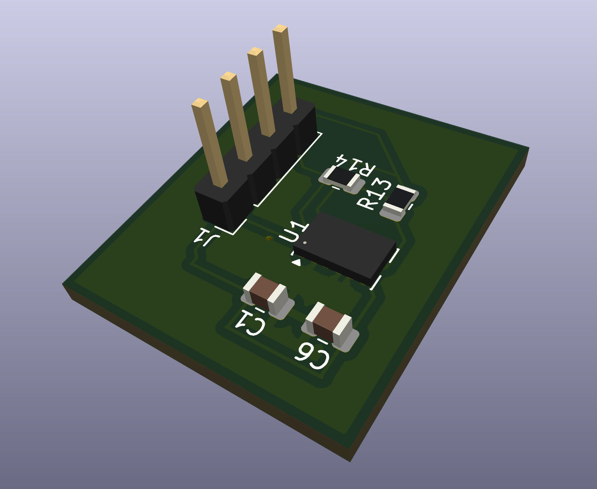

Ideas into
hardware.
I’m Samana Hassan. I’m exploring the connections between electronics, code, and things we can actually build.
Explore selected work ↓
Engineering, in practice.
My contributions, the decisions behind them, and what I learned along the way.
Speed. Stability.
Practical tradeoffs.
My contribution
The weekend before preliminary design review, I redid our XFLR5 calculations after learning the analysis process. I used the results to revisit the design with speed and stability in mind, then contributed to our preliminary design report.
The design decision
I initially favored a tapered or elliptical wing. Our three-person team chose a rectangular wing, which was more practical to manufacture.
Speed achieved by the team’s aircraft
A stable design matters when plans change.
After the motor failed, the aircraft was able to glide down from about 100 meters. Seeing the plane remain stable made the analysis feel much more tangible.
A good design balances performance with what the team can manufacture. This project helped me think more carefully about both.
From schematic
to board.
A motion-sensing PCB built around an accelerometer.
My contribution
I developed the sensor schematic and PCB layout in KiCad and reviewed the board in 3D.
What I learned
The project helped me connect schematic nets with component placement and routing while exploring my interest in PCB design.
Finding the
right power.
My contribution
On the seven-person electronics team, I work with my group on MATLAB code for motor statistics, calculations, and motor–propeller comparisons. We use live ESC telemetry and GitHub to evaluate performance and collaborate on code.
Why it matters
The calculations help us compare propulsion options and support component selection. I also support electrical integration through wiring, soldering, and testing.
More code screenshots +
One function.
Three approaches.
Behavioral, structural, and dataflow Verilog.
My contribution
I modeled f = a + bc using three Verilog approaches and generated waveforms for specific input combinations. Comparing the simulations helped me check the circuit’s expected behavior.
Try the function
f = a OR (b AND c)
An interactive illustration of the function from my coursework.The code behind the waveforms +
A little adventure
in the browser.
Building + simplifying
During my internship, I built websites, including this story game. As the idea grew, the implementation became difficult to manage. I kept working through it and asked peers for help finding a simpler approach.
What I learned
Simplifying the design preserved the key features and made the project more manageable. It taught me to ask for feedback and recognize when a simpler solution better serves the original idea.
Play the original game ↗Curious mind.
Hands-on engineer.
I’m studying electrical engineering at UT Dallas, with an expected graduation in 2029. I’m especially interested in automotive electronics and PCB design.
Through Comet Aviation, SAE, robotics, and coursework, I’m learning to analyze problems, work through tradeoffs, and build alongside people I can learn from.
Design + hardware
MATLAB / KiCad / XFLR5 / SOLIDWORKS / Onshape / Soldering / Wiring
Code + development
Python / C / Verilog / HTML / CSS / JavaScript / Git/GitHub / VS Code / Quartus Prime / ModelSim